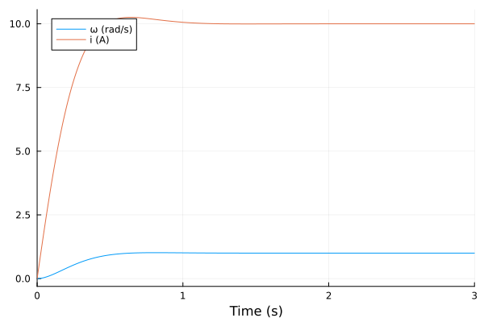
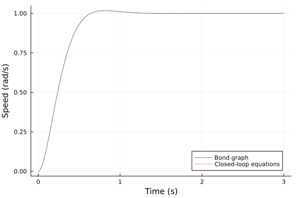
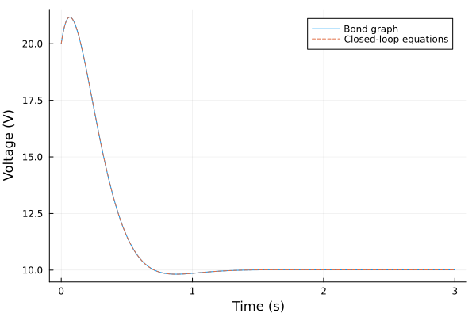

DC Motor Speed Control
The source files for all examples can be found in /examples.
Introduction
A DC motor left to itself settles at whatever speed its voltage, its resistance and its friction allow. To make it turn at a commanded speed, a controller measures the speed, compares it with the reference and adjusts the armature voltage. This example closes that loop around the motor of the DC Motor example: a flow detector measures the shaft speed, an MTK standard-library PI controller turns the speed error into a voltage, and a modulated effort source applies it. The bond graph carries the power; the loop is made of signals, which carry none.
The problem is the one of the University of Michigan Control Tutorials for MATLAB and Simulink (CTMS), DC Motor Speed: System Modeling and DC Motor Speed: PID Controller Design, whose physical sketch is

Plant
CTMS assumes a rigid rotor and shaft, viscous friction, and a constant magnetic field, so that the motor torque is $T = K i$ and the back EMF is $e = K\dot{\theta}$, with one constant $K$ for both in SI units. Newton's second law and Kirchhoff's voltage law give
\[J\ddot{\theta} + b\,\dot{\theta} = K\,i,\]
\[L\frac{di}{dt} + R\,i = V - K\,\dot{\theta},\]
and, eliminating $I(s)$, the transfer function from the armature voltage to the shaft speed $\omega = \dot{\theta}$,
\[P(s) = \dfrac{\Omega(s)}{V(s)} = \dfrac{K}{(Js + b)(Ls + R) + K^2}.\]
The parameters are CTMS's: $J = 0.01$ kg⋅m², $b = 0.1$ N⋅m⋅s, $K = 0.01$ (V⋅s/rad = N⋅m/A), $R = 1$ Ω, $L = 0.5$ H. They are the same values as in the DC Motor example; what changes is the input: there a constant 12 V and an applied torque, here a voltage set by the controller and no load torque.
Requirements and controller
Without control, 1 V gives 0.1 rad/s in steady state. For a 1 rad/s step in the speed reference, CTMS asks for a settling time under 2 s, an overshoot under 5 % and a steady-state error under 1 %. Its controller is $C(s) = K_p + K_i/s + K_d s$ acting on the error $\omega_r - \omega$, with unity feedback; its PID page ends with $K_p = 100$, $K_i = 200$, $K_d = 10$.
This example keeps the integral term, which removes the steady-state error, and leaves out the derivative: a PI controller, $V = K_p(\omega_r - \omega) + K_i\int(\omega_r - \omega)\,dt$. Its gains are not CTMS's; we choose them here. The plant's denominator is $JL\,s^2 + (JR + bL)\,s + bR + K^2 = 0.005\,s^2 + 0.06\,s + 0.1001$, with poles near $-2$ and $-10$. Putting the PI zero $-K_i/K_p$ on the slow pole cancels it, and the loop becomes $\dfrac{2K_p}{s(s + 10)}$, whose closed loop $s^2 + 10\,s + 2K_p$ is a second-order system with $\omega_n^2 = 2K_p$ and $\zeta = 5/\omega_n$. With $K_p = 20$ and $K_i = 40$, $\zeta \approx 0.79$: about 2 % overshoot and a settling time near $4/(\zeta\omega_n) = 0.8$ s.
The closed loop has three states, the speed, the current and the integral of the error $z$:
\[J\dot{\omega} = K\,i - b\,\omega,\]
\[L\frac{di}{dt} = V - R\,i - K\,\omega,\]
\[\dot{z} = \omega_r - \omega, \qquad V = K_p(\omega_r - \omega) + K_i\,z.\]
Bond Graph Model
The plant is the DC motor's bond graph without the torque source: an electrical 1-junction with the source $V$, the resistance $R$ and the inertia $L$; a mechanical 1-junction with the inertia $J$ and the resistance $b$; and the gyrator, with modulus $K$, between them. The source is now modulated (MSe): its effort comes from a signal. A flow detector Df on the mechanical junction reads the shared flow, the shaft speed, and outputs it as a signal. Its bond carries no power ($e = 0$), so it doesn't change the plant. The feedback path, from Df through the error and the PI controller to the source, consists of activated bonds (Karnopp, Margolis & Rosenberg 2012, §3.2).
The drawing is made from the model with bgplot, once the model is built.
Preliminary Steps
We build the closed loop from bond-graph elements and standard-library blocks, simulate a 1 rad/s step in the reference, and compare it with the closed-loop equations above written as a plain MTK model.
using BondGraphToolkit
using BondGraphToolkit.ModelingToolkit: t_nounits as t, D_nounits as D
import ModelingToolkitStandardLibrary.Blocks as Blocks
using OrdinaryDiffEqTsit5
using PlotsSystem Element Definitions
CTMS's motor parameters, and the PI gains chosen above. Both models below take their numbers from here.
p = (J = 0.01, # (kg⋅m²) rotor moment of inertia
b = 0.1, # (N⋅m⋅s) viscous friction
K = 0.01, # (V⋅s/rad = N⋅m/A) motor constant
R = 1.0, # (Ω) armature resistance
L = 0.5, # (H) armature inductance
Kp = 20.0, # (V⋅s/rad) proportional gain
Ki = 40.0, # (V/rad) integral gain
ωr = 1.0) # (rad/s) speed reference(J = 0.01, b = 0.1, K = 0.01, R = 1.0, L = 0.5, Kp = 20.0, Ki = 40.0, ωr = 1.0)The electrical side: the armature inductance and resistance, and the armature voltage as a modulated effort source, Se() without a value, which reads its effort from its input:
@named L = Inertia(I = p.L)
@named R = Resistance(R = p.R)
@named V = Se()\[ \begin{align} e\left( t \right) &= \mathtt{power.e}\left( t \right) \\ \mathtt{pout.e}\left( t \right) &= \mathtt{power.e}\left( t \right) \\ f\left( t \right) &= - \mathtt{pout.f}\left( t \right) + \mathtt{power.f}\left( t \right) \\ e\left( t \right) &= \mathtt{input.u}\left( t \right) \end{align} \]
The mechanical side: the rotor inertia, its friction, and the speed sensor, a flow detector whose output is the flow of its bond:
@named J = Inertia(I = p.J)
@named b = Resistance(R = p.b)
@named tach = Df()\[ \begin{align} e\left( t \right) &= \mathtt{power.e}\left( t \right) \\ \mathtt{pout.e}\left( t \right) &= \mathtt{power.e}\left( t \right) \\ f\left( t \right) &= - \mathtt{pout.f}\left( t \right) + \mathtt{power.f}\left( t \right) \\ e\left( t \right) &= 0 \\ \mathtt{output.u}\left( t \right) &= f\left( t \right) \end{align} \]
The motor's gyrator, with the motor constant as its modulus:
@named gy = GY(r = p.K)\[ \begin{align} \mathtt{p1.e}\left( t \right) &= - \mathtt{p2.f}\left( t \right) ~ r \\ \mathtt{p2.e}\left( t \right) &= \mathtt{p1.f}\left( t \right) ~ r \end{align} \]
The control blocks: the reference, the error $\omega_r - \omega$ (Feedback outputs input1 - input2), and the PI controller. Blocks.PI computes $k\,(e + \frac{1}{T}\int e\,dt)$, so $k = K_p$ and $T = K_p/K_i$.
@named ref = Blocks.Constant(k = p.ωr)
@named err = Blocks.Feedback()
@named pi = Blocks.PI(k = p.Kp, T = p.Kp / p.Ki)\[ \begin{align} 0 &= \mathrm{connect}\left( err_{input}, addPI_{+}input1 \right) \\ 0 &= \mathrm{connect}\left( addPI_{+}output, gainPI_{+}input \right) \\ 0 &= \mathrm{connect}\left( gainPI_{+}output, ctr_{output} \right) \\ 0 &= \mathrm{connect}\left( err_{input}, int_{+}input \right) \\ 0 &= \mathrm{connect}\left( int_{+}output, addPI_{+}input2 \right) \\ \mathtt{gainPI.u}\left( t \right) &= \mathtt{gainPI.input.u}\left( t \right) \\ \mathtt{gainPI.y}\left( t \right) &= \mathtt{gainPI.output.u}\left( t \right) \\ \mathtt{gainPI.y}\left( t \right) &= \mathtt{gainPI.k} ~ \mathtt{gainPI.u}\left( t \right) \\ \mathtt{addPI.output.u}\left( t \right) &= \mathtt{addPI.input1.u}\left( t \right) ~ \mathtt{addPI.k1} + \mathtt{addPI.input2.u}\left( t \right) ~ \mathtt{addPI.k2} \\ \mathtt{int.u}\left( t \right) &= \mathtt{int.input.u}\left( t \right) \\ \mathtt{int.y}\left( t \right) &= \mathtt{int.output.u}\left( t \right) \\ \frac{\mathrm{d}\mathtt{int.x}\left( t \right)}{\mathrm{d}t} &= \mathtt{int.k} ~ \mathtt{int.u}\left( t \right) \\ \mathtt{int.y}\left( t \right) &= \mathtt{int.x}\left( t \right) \end{align} \]
Model Construction
The junctions follow the DC motor example. On each 1-junction the source's bond points in, away from the source, and the bonds of R, I and the detector point out into the element (Karnopp, Margolis & Rosenberg 2012, §3.1, pp. 39 and 49). The electrical bond leaves its junction towards the gyrator and the mechanical bond enters its junction from it, following the power from the source to the shaft (Fig. 2.3d, pp. 25–26). So the back EMF enters the electrical effort sum with a minus sign and the motor torque enters the mechanical one with a plus sign.
@named je = Junction1(V => :pout, R, L, :gy)
@named jm = Junction1(:gy => :in, J, b, tach)\[ \begin{align} 0 &= \mathrm{connect}\left( gy, core_{+}p1 \right) \\ 0 &= \mathrm{connect}\left( J_{+}power, core_{+}p2 \right) \\ 0 &= \mathrm{connect}\left( b_{+}power, core_{+}p3 \right) \\ 0 &= \mathrm{connect}\left( tach_{+}power, core_{+}p4 \right) \\ - \mathtt{core.p2.f}\left( t \right) &= \mathtt{core.p1.f}\left( t \right) \\ - \mathtt{core.p3.f}\left( t \right) &= \mathtt{core.p1.f}\left( t \right) \\ - \mathtt{core.p4.f}\left( t \right) &= \mathtt{core.p1.f}\left( t \right) \\ 0 &= \mathtt{core.p1.e}\left( t \right) - \mathtt{core.p2.e}\left( t \right) - \mathtt{core.p3.e}\left( t \right) - \mathtt{core.p4.e}\left( t \right) \\ \frac{\mathrm{d}\mathtt{J.p}\left( t \right)}{\mathrm{d}t} &= \mathtt{J.e}\left( t \right) \\ \mathtt{J.e}\left( t \right) &= \mathtt{J.power.e}\left( t \right) \\ \mathtt{J.pout.e}\left( t \right) &= \mathtt{J.power.e}\left( t \right) \\ \mathtt{J.f}\left( t \right) &= - \mathtt{J.pout.f}\left( t \right) + \mathtt{J.power.f}\left( t \right) \\ \mathtt{J.f}\left( t \right) &= \frac{\mathtt{J.p}\left( t \right)}{\mathtt{J.I}} \\ \mathtt{b.e}\left( t \right) &= \mathtt{b.power.e}\left( t \right) \\ \mathtt{b.pout.e}\left( t \right) &= \mathtt{b.power.e}\left( t \right) \\ \mathtt{b.f}\left( t \right) &= - \mathtt{b.pout.f}\left( t \right) + \mathtt{b.power.f}\left( t \right) \\ \mathtt{b.e}\left( t \right) &= \mathtt{b.R} ~ \mathtt{b.f}\left( t \right) \\ \mathtt{tach.e}\left( t \right) &= \mathtt{tach.power.e}\left( t \right) \\ \mathtt{tach.pout.e}\left( t \right) &= \mathtt{tach.power.e}\left( t \right) \\ \mathtt{tach.f}\left( t \right) &= - \mathtt{tach.pout.f}\left( t \right) + \mathtt{tach.power.f}\left( t \right) \\ \mathtt{tach.e}\left( t \right) &= 0 \\ \mathtt{tach.output.u}\left( t \right) &= \mathtt{tach.f}\left( t \right) \end{align} \]
The bonds go through the gyrator, port 1 in and port 2 out; the signals go from the detector to the error's second input, from the reference to its first, then through the controller to the source.
@named loop = System([connect(je.gy, gy.p1), connect(gy.p2, jm.gy),
connect(ref.output, err.input1), connect(jm.tach.output, err.input2),
connect(err.output, pi.err_input), connect(pi.ctr_output, je.V.input)], t;
systems = [je, gy, jm, ref, err, pi])\[ \begin{align} 0 &= \mathrm{connect}\left( je_{+}gy, gy_{+}p1 \right) \\ 0 &= \mathrm{connect}\left( gy_{+}p2, jm_{+}gy \right) \\ 0 &= \mathrm{connect}\left( ref_{+}output, err_{+}input1 \right) \\ 0 &= \mathrm{connect}\left( jm_{+}tach_{+}output, err_{+}input2 \right) \\ 0 &= \mathrm{connect}\left( err_{+}output, pi_{+}err_{input} \right) \\ 0 &= \mathrm{connect}\left( pi_{+}ctr_{output}, je_{+}V_{+}input \right) \\ 0 &= \mathrm{connect}\left( V_{+}pout, core_{+}p1 \right) \\ 0 &= \mathrm{connect}\left( R_{+}power, core_{+}p2 \right) \\ 0 &= \mathrm{connect}\left( L_{+}power, core_{+}p3 \right) \\ 0 &= \mathrm{connect}\left( gy, core_{+}p4 \right) \\ - \mathtt{je.core.p2.f}\left( t \right) &= \mathtt{je.core.p1.f}\left( t \right) \\ - \mathtt{je.core.p3.f}\left( t \right) &= \mathtt{je.core.p1.f}\left( t \right) \\ - \mathtt{je.core.p4.f}\left( t \right) &= \mathtt{je.core.p1.f}\left( t \right) \\ 0 &= \mathtt{je.core.p1.e}\left( t \right) - \mathtt{je.core.p2.e}\left( t \right) - \mathtt{je.core.p3.e}\left( t \right) - \mathtt{je.core.p4.e}\left( t \right) \\ \mathtt{je.V.e}\left( t \right) &= \mathtt{je.V.power.e}\left( t \right) \\ \mathtt{je.V.pout.e}\left( t \right) &= \mathtt{je.V.power.e}\left( t \right) \\ \mathtt{je.V.f}\left( t \right) &= - \mathtt{je.V.pout.f}\left( t \right) + \mathtt{je.V.power.f}\left( t \right) \\ \mathtt{je.V.e}\left( t \right) &= \mathtt{je.V.input.u}\left( t \right) \\ \mathtt{je.R.e}\left( t \right) &= \mathtt{je.R.power.e}\left( t \right) \\ \mathtt{je.R.pout.e}\left( t \right) &= \mathtt{je.R.power.e}\left( t \right) \\ \mathtt{je.R.f}\left( t \right) &= - \mathtt{je.R.pout.f}\left( t \right) + \mathtt{je.R.power.f}\left( t \right) \\ \mathtt{je.R.e}\left( t \right) &= \mathtt{je.R.R} ~ \mathtt{je.R.f}\left( t \right) \\ \frac{\mathrm{d}\mathtt{je.L.p}\left( t \right)}{\mathrm{d}t} &= \mathtt{je.L.e}\left( t \right) \\ \mathtt{je.L.e}\left( t \right) &= \mathtt{je.L.power.e}\left( t \right) \\ \mathtt{je.L.pout.e}\left( t \right) &= \mathtt{je.L.power.e}\left( t \right) \\ \mathtt{je.L.f}\left( t \right) &= - \mathtt{je.L.pout.f}\left( t \right) + \mathtt{je.L.power.f}\left( t \right) \\ \mathtt{je.L.f}\left( t \right) &= \frac{\mathtt{je.L.p}\left( t \right)}{\mathtt{je.L.I}} \\ \mathtt{gy.p1.e}\left( t \right) &= - \mathtt{gy.p2.f}\left( t \right) ~ \mathtt{gy.r} \\ \mathtt{gy.p2.e}\left( t \right) &= \mathtt{gy.p1.f}\left( t \right) ~ \mathtt{gy.r} \\ 0 &= \mathrm{connect}\left( gy, core_{+}p1 \right) \\ 0 &= \mathrm{connect}\left( J_{+}power, core_{+}p2 \right) \\ 0 &= \mathrm{connect}\left( b_{+}power, core_{+}p3 \right) \\ 0 &= \mathrm{connect}\left( tach_{+}power, core_{+}p4 \right) \\ - \mathtt{jm.core.p2.f}\left( t \right) &= \mathtt{jm.core.p1.f}\left( t \right) \\ - \mathtt{jm.core.p3.f}\left( t \right) &= \mathtt{jm.core.p1.f}\left( t \right) \\ - \mathtt{jm.core.p4.f}\left( t \right) &= \mathtt{jm.core.p1.f}\left( t \right) \\ 0 &= \mathtt{jm.core.p1.e}\left( t \right) - \mathtt{jm.core.p2.e}\left( t \right) - \mathtt{jm.core.p3.e}\left( t \right) - \mathtt{jm.core.p4.e}\left( t \right) \\ \frac{\mathrm{d}\mathtt{jm.J.p}\left( t \right)}{\mathrm{d}t} &= \mathtt{jm.J.e}\left( t \right) \\ \mathtt{jm.J.e}\left( t \right) &= \mathtt{jm.J.power.e}\left( t \right) \\ \mathtt{jm.J.pout.e}\left( t \right) &= \mathtt{jm.J.power.e}\left( t \right) \\ \mathtt{jm.J.f}\left( t \right) &= - \mathtt{jm.J.pout.f}\left( t \right) + \mathtt{jm.J.power.f}\left( t \right) \\ \mathtt{jm.J.f}\left( t \right) &= \frac{\mathtt{jm.J.p}\left( t \right)}{\mathtt{jm.J.I}} \\ \mathtt{jm.b.e}\left( t \right) &= \mathtt{jm.b.power.e}\left( t \right) \\ \mathtt{jm.b.pout.e}\left( t \right) &= \mathtt{jm.b.power.e}\left( t \right) \\ \mathtt{jm.b.f}\left( t \right) &= - \mathtt{jm.b.pout.f}\left( t \right) + \mathtt{jm.b.power.f}\left( t \right) \\ \mathtt{jm.b.e}\left( t \right) &= \mathtt{jm.b.R} ~ \mathtt{jm.b.f}\left( t \right) \\ \mathtt{jm.tach.e}\left( t \right) &= \mathtt{jm.tach.power.e}\left( t \right) \\ \mathtt{jm.tach.pout.e}\left( t \right) &= \mathtt{jm.tach.power.e}\left( t \right) \\ \mathtt{jm.tach.f}\left( t \right) &= - \mathtt{jm.tach.pout.f}\left( t \right) + \mathtt{jm.tach.power.f}\left( t \right) \\ \mathtt{jm.tach.e}\left( t \right) &= 0 \\ \mathtt{jm.tach.output.u}\left( t \right) &= \mathtt{jm.tach.f}\left( t \right) \\ \mathtt{ref.output.u}\left( t \right) &= \mathtt{ref.k} \\ \mathtt{err.output.u}\left( t \right) &= \mathtt{err.input1.u}\left( t \right) - \mathtt{err.input2.u}\left( t \right) \\ 0 &= \mathrm{connect}\left( err_{input}, addPI_{+}input1 \right) \\ 0 &= \mathrm{connect}\left( addPI_{+}output, gainPI_{+}input \right) \\ 0 &= \mathrm{connect}\left( gainPI_{+}output, ctr_{output} \right) \\ 0 &= \mathrm{connect}\left( err_{input}, int_{+}input \right) \\ 0 &= \mathrm{connect}\left( int_{+}output, addPI_{+}input2 \right) \\ \mathtt{pi.gainPI.u}\left( t \right) &= \mathtt{pi.gainPI.input.u}\left( t \right) \\ \mathtt{pi.gainPI.y}\left( t \right) &= \mathtt{pi.gainPI.output.u}\left( t \right) \\ \mathtt{pi.gainPI.y}\left( t \right) &= \mathtt{pi.gainPI.k} ~ \mathtt{pi.gainPI.u}\left( t \right) \\ \mathtt{pi.addPI.output.u}\left( t \right) &= \mathtt{pi.addPI.input1.u}\left( t \right) ~ \mathtt{pi.addPI.k1} + \mathtt{pi.addPI.input2.u}\left( t \right) ~ \mathtt{pi.addPI.k2} \\ \mathtt{pi.int.u}\left( t \right) &= \mathtt{pi.int.input.u}\left( t \right) \\ \mathtt{pi.int.y}\left( t \right) &= \mathtt{pi.int.output.u}\left( t \right) \\ \frac{\mathrm{d}\mathtt{pi.int.x}\left( t \right)}{\mathrm{d}t} &= \mathtt{pi.int.k} ~ \mathtt{pi.int.u}\left( t \right) \\ \mathtt{pi.int.y}\left( t \right) &= \mathtt{pi.int.x}\left( t \right) \end{align} \]
The bond graph, drawn from the model. bgplot draws the bonds only: the signal path from tach through the blocks to V is not drawn, and the modulated source is labelled Se.
bgplot(loop)
-->
<!-- Title: BondGraph Pages: 1 -->
<svg width="466pt" height="202pt"
viewBox="0.00 0.00 466.00 202.00" xmlns="http://www.w3.org/2000/svg" xmlns:xlink="http://www.w3.org/1999/xlink">
<g id="graph0" class="graph" transform="scale(1 1) rotate(0) translate(4 198)">
<title>BondGraph</title>
<polygon fill="white" stroke="none" points="-4,4 -4,-198 462.25,-198 462.25,4 -4,4"/>
<!-- je -->
<g id="node1" class="node">
<title>je</title>
<text xml:space="preserve" text-anchor="middle" x="124" y="-92.33" font-family="Times,serif" font-size="14.00">1</text>
</g>
<!-- je₊L -->
<g id="node4" class="node">
<title>je₊L</title>
<text xml:space="preserve" text-anchor="middle" x="124" y="-13.32" font-family="Times,serif" font-size="14.00">I:L</text>
</g>
<!-- je&%2345;>je₊L -->
<g id="edge3" class="edge">
<title>je&%2345;>je₊L</title>
<path fill="none" stroke="black" d="M124,-79.34C124,-68.25 124,-57.17 124,-46.08"/>
<polygon fill="black" stroke="black" points="124,-36.1 128.5,-46.1 124,-40.9 124,-46.1 124,-46.1 124,-36.1"/>
</g>
<!-- gy -->
<g id="node5" class="node">
<title>gy</title>
<text xml:space="preserve" text-anchor="middle" x="222.25" y="-92.33" font-family="Times,serif" font-size="14.00">GY:gy</text>
</g>
<!-- je&%2345;>gy -->
<g id="edge7" class="edge">
<title>je&%2345;>gy</title>
<path fill="none" stroke="black" d="M150.79,-97C161.03,-97 172.99,-97 184.12,-97"/>
<polygon fill="black" stroke="black" points="193.83,-97 183.83,-101.5 189.04,-97 183.83,-97 183.83,-97 193.83,-97"/>
</g>
<!-- je₊V -->
<g id="node2" class="node">
<title>je₊V</title>
<text xml:space="preserve" text-anchor="middle" x="27" y="-92.33" font-family="Times,serif" font-size="14.00">Se:V</text>
</g>
<!-- je₊V&%2345;>je -->
<g id="edge1" class="edge">
<title>je₊V&%2345;>je</title>
<path fill="none" stroke="black" d="M53.96,-97C64.12,-97 75.94,-97 86.91,-97"/>
<polygon fill="black" stroke="black" points="96.87,-97 86.87,-101.5 92.07,-97 86.87,-97 86.87,-97 96.87,-97"/>
</g>
<!-- je₊R -->
<g id="node3" class="node">
<title>je₊R</title>
<text xml:space="preserve" text-anchor="middle" x="124" y="-171.32" font-family="Times,serif" font-size="14.00">R:R</text>
</g>
<!-- je₊R&%2345;>je -->
<g id="edge2" class="edge">
<title>je₊R&%2345;>je</title>
<path fill="none" stroke="black" d="M124,-148.16C124,-137.07 124,-125.98 124,-114.9"/>
<polygon fill="black" stroke="black" points="124,-158.13 119.5,-148.13 124,-153.34 124,-148.13 124,-148.13 124,-158.13"/>
</g>
<!-- jm -->
<g id="node6" class="node">
<title>jm</title>
<text xml:space="preserve" text-anchor="middle" x="327.38" y="-92.33" font-family="Times,serif" font-size="14.00">1</text>
</g>
<!-- gy&%2345;>jm -->
<g id="edge8" class="edge">
<title>gy&%2345;>jm</title>
<path fill="none" stroke="black" d="M250.34,-97C262.59,-97 277.23,-97 290.38,-97"/>
<polygon fill="black" stroke="black" points="300.32,-97 290.32,-101.5 295.53,-97 290.32,-97 290.32,-97 300.32,-97"/>
</g>
<!-- jm₊J -->
<g id="node7" class="node">
<title>jm₊J</title>
<text xml:space="preserve" text-anchor="middle" x="431.25" y="-92.33" font-family="Times,serif" font-size="14.00">I:J</text>
</g>
<!-- jm&%2345;>jm₊J -->
<g id="edge4" class="edge">
<title>jm&%2345;>jm₊J</title>
<path fill="none" stroke="black" d="M354.35,-97C366.44,-97 381.03,-97 394.17,-97"/>
<polygon fill="black" stroke="black" points="404.12,-97 394.12,-101.5 399.33,-97 394.12,-97 394.12,-97 404.12,-97"/>
</g>
<!-- jm₊tach -->
<g id="node9" class="node">
<title>jm₊tach</title>
<text xml:space="preserve" text-anchor="middle" x="327.38" y="-13.32" font-family="Times,serif" font-size="14.00">Df:tach</text>
</g>
<!-- jm&%2345;>jm₊tach -->
<g id="edge6" class="edge">
<title>jm&%2345;>jm₊tach</title>
<path fill="none" stroke="black" d="M327.38,-79.34C327.38,-68.25 327.38,-57.17 327.38,-46.08"/>
<polygon fill="black" stroke="black" points="327.38,-36.1 331.88,-46.1 327.38,-40.9 327.38,-46.1 327.38,-46.1 327.38,-36.1"/>
</g>
<!-- jm₊b -->
<g id="node8" class="node">
<title>jm₊b</title>
<text xml:space="preserve" text-anchor="middle" x="327.38" y="-171.32" font-family="Times,serif" font-size="14.00">R:b</text>
</g>
<!-- jm₊b&%2345;>jm -->
<g id="edge5" class="edge">
<title>jm₊b&%2345;>jm</title>
<path fill="none" stroke="black" d="M327.38,-148.16C327.38,-137.07 327.38,-125.98 327.38,-114.9"/>
<polygon fill="black" stroke="black" points="327.38,-158.13 322.88,-148.13 327.38,-153.34 327.38,-148.13 327.38,-148.13 327.38,-158.13"/>
</g>
</g>
</svg>
)
Analysing the model
mtkcompile keeps three states: the two inertias' momenta and the controller's integrator.
sys = mtkcompile(loop)\[ \begin{align} \frac{\mathrm{d}\mathtt{pi.addPI.input2.u}\left( t \right)}{\mathrm{d}t} &= \mathtt{err.output.u}\left( t \right) ~ \mathtt{pi.int.k} \\ \frac{\mathrm{d}\mathtt{jm.J.p}\left( t \right)}{\mathrm{d}t} &= \mathtt{jm.J.e}\left( t \right) \\ \frac{\mathrm{d}\mathtt{je.L.p}\left( t \right)}{\mathrm{d}t} &= \mathtt{je.L.e}\left( t \right) \end{align} \]
Print system states
unknowns(sys)3-element Vector{SymbolicUtils.BasicSymbolicImpl.var"typeof(BasicSymbolicImpl)"{SymReal}}:
pi₊addPI₊input2₊u(t)
jm₊J₊p(t)
je₊L₊p(t)Print system parameters
parameters(sys)14-element Vector{SymbolicUtils.BasicSymbolicImpl.var"typeof(BasicSymbolicImpl)"{SymReal}}:
je₊R₊R
je₊L₊I
gy₊r
jm₊J₊I
jm₊b₊R
ref₊k
pi₊k
pi₊T
pi₊gainPI₊u_start
pi₊gainPI₊y_start
pi₊addPI₊k1
pi₊addPI₊k2
pi₊int₊u_start
pi₊int₊y_startGenerated equations against the hand derivation
bgequations names the states and parameters as we choose. The inertias' states are their momenta, the flux linkage $\lambda = L\,i$ and the angular momentum $h = J\omega$; the controller's state is its integrator's output, $x = z/T$. We rename them, and the parameters, to the symbols of the introduction, inside a let so that L, R, J and b keep naming the elements:
let
@variables λ(t) h(t) x(t)
@parameters L R J b K Kp T ωᵣ
bgequations(loop; rename = Dict(je.L.p => λ, jm.J.p => h, pi.addPI.input2.u => x,
je.L.I => L, je.R.R => R, jm.J.I => J, jm.b.R => b,
gy.r => K, pi.k => Kp, pi.T => T, ref.k => ωᵣ,
pi.addPI.k1 => 1, pi.addPI.k2 => 1))
end\[ \begin{align} \frac{\mathrm{d}x\left( t \right)}{\mathrm{d}t} &= \frac{\frac{ - h\left( t \right)}{J} + \mathtt{\omega{_r}}}{T} \\ \frac{\mathrm{d}h\left( t \right)}{\mathrm{d}t} &= \frac{K ~ \lambda\left( t \right)}{L} + \frac{ - b ~ h\left( t \right)}{J} \\ \frac{\mathrm{d}\lambda\left( t \right)}{\mathrm{d}t} &= \frac{ - K ~ h\left( t \right)}{J} + \frac{ - R ~ \lambda\left( t \right)}{L} + \mathtt{Kp} ~ \left( x\left( t \right) + \frac{ - h\left( t \right)}{J} + \mathtt{\omega_r} \right) \end{align} \]
With $\lambda = L\,i$ and $h = J\omega$, these read $L\frac{di}{dt} = V - R\,i - K\omega$ and $J\dot{\omega} = K\,i - b\,\omega$, the plant's equations, where the source's effort is the controller's output $V = K_p\,(\omega_r - \omega + x)$ (the weights of Blocks.PI's internal Add, both 1, are substituted), and the integrator gives $T\dot{x} = \omega_r - \omega$. With $x = z/T$ and $K_p/T = K_i$, this is the closed loop of the introduction.
System Simulations
Bond graph model
Everything starts at rest, with the reference at 1 rad/s: a step at $t = 0$.
tspan = (0.0, 3.0)
prob = ODEProblem(sys, [], tspan)
sol = solve(prob, Tsit5(), reltol = 1e-10, abstol = 1e-10)
plot(sol, idxs = [jm.J.f, je.L.f], labels = ["ω (rad/s)" "i (A)"], xlabel = "Time (s)")
Closed-loop reference model
The closed-loop equations of the introduction, as a plain MTK model with CTMS's parameters and the same gains:
@variables ω(t) = 0.0 i(t) = 0.0 z(t) = 0.0 Vₐ(t)
eqs_cl = [
p.J * D(ω) ~ p.K * i - p.b * ω,
p.L * D(i) ~ Vₐ - p.R * i - p.K * ω,
D(z) ~ p.ωr - ω,
Vₐ ~ p.Kp * (p.ωr - ω) + p.Ki * z,
]
@named sys_cl = System(eqs_cl, t)
sys_cl = mtkcompile(sys_cl)
sol_cl = solve(ODEProblem(sys_cl, [], tspan), Tsit5(), reltol = 1e-10, abstol = 1e-10);Compare models
Shaft speed:
plot(sol.t, sol[jm.J.f], label = "Bond graph", ylabel = "Speed (rad/s)")
plot!(sol_cl.t, sol_cl[ω], label = "Closed-loop equations", xlabel = "Time (s)", linestyle = :dash)
Armature voltage, the controller's output:
plot(sol.t, sol[pi.ctr_output.u], label = "Bond graph", ylabel = "Voltage (V)")
plot!(sol_cl.t, sol_cl[Vₐ], label = "Closed-loop equations", xlabel = "Time (s)", linestyle = :dash)
On a common time grid, the largest difference between the two models in speed, current and voltage:
tgrid = range(tspan..., length = 1001)
(maximum(abs, sol(tgrid; idxs = jm.J.f).u - sol_cl(tgrid; idxs = ω).u),
maximum(abs, sol(tgrid; idxs = je.L.f).u - sol_cl(tgrid; idxs = i).u),
maximum(abs, sol(tgrid; idxs = pi.ctr_output.u).u - sol_cl(tgrid; idxs = Vₐ).u))(2.4874213799819245e-10, 2.730597969957671e-10, 4.914420870250069e-9)Against CTMS's requirements
The overshoot (%), the 2 % settling time (s) and the steady-state error (%) at the end of the run, for a 1 rad/s step:
ωg = sol(tgrid; idxs = jm.J.f).u
overshoot = 100 * (maximum(ωg) - p.ωr) / p.ωr
settling = tgrid[findlast(w -> abs(w - p.ωr) > 0.02 * p.ωr, ωg) + 1]
steady_error = 100 * abs(p.ωr - ωg[end]) / p.ωr
(overshoot, settling, steady_error)(1.706999275038168, 0.585, 0.00033159148846717557)All three meet CTMS's requirements (under 5 %, under 2 s, under 1 %). The bond graph with a detector, blocks and a modulated source reproduces the hand-derived closed loop to the solver's tolerance.
This page was generated using Literate.jl.